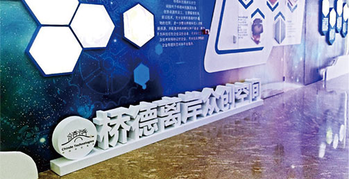

服务项目
桥德科技离岸众创空间位于苏州工业园区月亮湾国际会议中心内，毗邻独墅湖，自然环境优越、人文气息浓厚、发展环境得天独厚。场地面积约2000平米，配套休闲洽谈区、会议室、路演厅，为创业者们提供优雅舒适的交流办公环境。具备优秀的创业团队，提供基础服务、技术支持、法律援助、创业指导、科技项目申报和投融资服务，帮助中资企业，对接德国前沿科技。
桥德科技离岸众创空间成立于2016年10月，桥德科技离岸众创空间位于苏州工业园区月亮湾国际会议中心内，毗邻独墅湖，自然环境优越、人文气息浓厚、发展环境得天独厚。场地面积约2000平米，配套休闲洽谈区、会议室、路演厅，为创业者们提供优雅舒适的交流办公环境。

桥德科技离岸众创空间位于苏州工业园区月亮湾国际会议中心内，毗邻独墅湖，自然环境优越、人文气息浓厚、发展环境得天独厚。场地面积约2000平米，配套休闲洽谈区、会议室、路演厅，为创业者们提供优雅舒适的交流办公环境。具备优秀的创业团队，提供基础服务、技术支持、法律援助、创业指导、科技项目申报和投融资服务，帮助中资企业，对接德国前沿科技。
桥德科技在中、德分别建立桥德科技离岸创新创业基地平台（中国）以及中德跨境技术合作平台（德国），两大平台联动共享，优势互补，为中德技术架起了互融互通的桥梁。通过前期信息收集、客户匹配、远程对接、现场考察等一系列准备，每年举办春秋两次技术交流大会以及定期开展“一对一”定向投资对接会，真正帮助中德企业深度交流，力促合作共赢。
具备优秀的创业团队，提供基础服务、技术支持、法律援助、创业指导、科技项目申报和投融资服务,
帮助中资企业，对接德国前沿科技。
桥德科技集团旗下第一支1亿元的“人工智能”产业投资基金：桥德科技创投基金服务（苏州）有限公司（筹）。投资偏向于早期，以人工智能为核心，辐射八个方向资源：工业自动化、医疗设备、新能源汽车、农业机械、环保设备、精密仪器、新材料新技术、云计算。桥德创投基金与政府主管部门、同行、专业协会、投资顾问机构等多方合作汇集形成广博的政府和社会人脉资源，为公司高效运营和创新服务提供了有效的保